Mua thùng rác Hà Nội chất lượng, giá tốt tại Greendo
Nhu cầu sử dụng thùng rác tại Hà Nội ngày càng tăng tại hộ gia đình, doanh nghiệp và khu vực công cộng. Bài viết dưới đây do Greendo tổng hợp sẽ giúp bạn dễ dàng lựa chọn các loại thùng rác phù hợp, cập nhật giá bán và kinh nghiệm sử dụng hiệu quả.
1. Các loại thùng rác bán chạy tại Hà Nội
Tại Hà Nội, nhu cầu sử dụng thùng rác nhựa ngày càng đa dạng, từ hộ gia đình, chung cư đến khu công nghiệp, trường học và không gian công cộng. Dưới đây là các dòng thùng rác được sử dụng phổ biến nhất hiện nay, phân theo dung tích và mục đích sử dụng thực tế.
1.1. Thùng rác nhựa Hà Nội
Thùng rác nhựa được sử dụng phổ biến nhờ độ bền cao, nhẹ và dễ di chuyển. Các dung tích thường dùng gồm 120 lít, 240 lít và 660 lít, phù hợp cho nhiều nhu cầu thu gom rác từ hộ gia đình đến khu dân cư và khu vực tập trung đông người.
1.1.1. Thùng rác nhựa 120 lít
Thùng rác nhựa 120 lít là dòng dung tích trung bình, thiết kế nhỏ gọn, thường có bánh xe và nắp đậy kín, phù hợp cho nhu cầu thu gom rác sinh hoạt hằng ngày.
Ưu điểm: Thùng rác nhựa 120 lít có kích thước gọn gàng, trọng lượng nhẹ nên dễ di chuyển và vệ sinh trong quá trình sử dụng. Dung tích 120 lít đáp ứng tốt nhu cầu thu gom rác sinh hoạt hằng ngày, đồng thời chi phí đầu tư hợp lý, thuận tiện thay thế khi cần.
Nhược điểm: Do dung tích ở mức trung bình, sản phẩm không phù hợp với các khu vực phát sinh lượng rác lớn và sẽ cần thu gom rác thường xuyên nếu sử dụng cho tập thể đông người.
Vị trí đặt phù hợp: Thùng rác nhựa 120 lít thích hợp đặt tại hộ gia đình, nhà trọ, văn phòng quy mô nhỏ, trường học, nhà trẻ cũng như các khu dân cư và hẻm nhỏ.
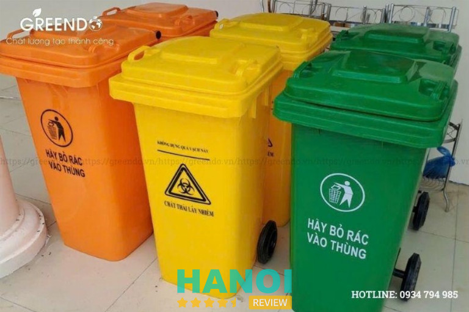
1.1.2. Thùng rác nhựa 240 lít
Thùng rác nhựa 240 lít là dòng thùng dung tích lớn, được sử dụng phổ biến tại các khu vực có mật độ người cao. Với khả năng chứa rác tốt trong ngày, sản phẩm giúp giảm tần suất thu gom, góp phần giữ gìn vệ sinh chung và tối ưu công tác quản lý rác thải.
Ưu điểm: Thùng rác nhựa 240 lít sở hữu dung tích lớn hơn so với loại 120 lít, giúp hạn chế việc đổ rác nhiều lần trong ngày. Thiết kế tích hợp bánh xe hỗ trợ di chuyển và thu gom thuận tiện, trong khi chất liệu nhựa bền bỉ giúp thùng chịu va đập tốt trong quá trình sử dụng lâu dài.
Nhược điểm: Thùng rác nhựa 240 lít chiếm nhiều diện tích và cần được bố trí tại vị trí tương đối cố định, không phù hợp với những không gian quá hẹp.
Vị trí đặt phù hợp: Sản phẩm phù hợp sử dụng tại chung cư, khu tập thể, trường học, bệnh viện, nhà hàng, quán ăn quy mô vừa cũng như các khu dân cư có lượng rác phát sinh thường xuyên.
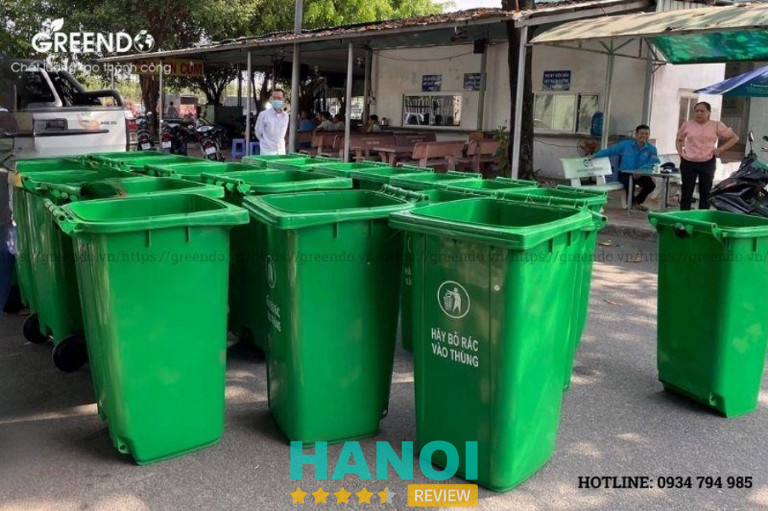
1.1.3. Thùng rác nhựa 660 lít
Thùng rác nhựa 660 lít là dòng thùng dung tích lớn, được thiết kế chuyên biệt cho các khu vực phát sinh lượng rác nhiều và cần thu gom theo ca hoặc theo ngày. Sản phẩm thường được sử dụng như thùng chứa trung gian tại các điểm tập kết rác, giúp tối ưu công tác thu gom và vận chuyển rác thải.
Ưu điểm: Với dung tích lớn, thùng rác nhựa 660 lít có khả năng chứa lượng rác đáng kể, phù hợp cho việc thu gom rác theo ca hoặc theo ngày. Kết cấu thùng chắc chắn, đi kèm bánh xe chịu tải cao, đáp ứng tốt nhu cầu sử dụng trong môi trường có cường độ vận hành lớn.
Nhược điểm: Kích thước lớn và tải trọng nặng khi chứa đầy rác, thùng rác nhựa 660 lít không thuận tiện cho việc di chuyển thủ công và không phù hợp với những không gian hẹp hoặc khu vực có lối đi nhỏ.
Vị trí đặt phù hợp: Sản phẩm thích hợp đặt tại khu công nghiệp, nhà xưởng, trung tâm thương mại, khu dân cư lớn, các điểm tập kết rác cũng như chợ đầu mối.
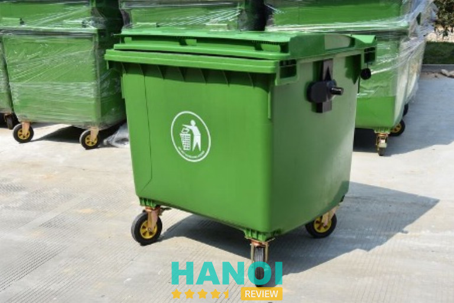
1.2. Thùng rác inox Hà Nội
Thùng rác inox thường được sử dụng ở không gian trong nhà, nơi yêu cầu cao về tính thẩm mỹ, vệ sinh và độ sạch sẽ. Với bề mặt sáng, dễ lau chùi và khả năng chống gỉ sét tốt, dòng thùng rác này phù hợp cho gia đình, văn phòng, nhà hàng và các không gian dịch vụ.
1.2.1. Thùng rác inox 12 lít
Thùng rác inox 12 lít là dòng dung tích nhỏ, thiết kế đơn giản và tinh gọn, hướng đến nhu cầu sử dụng cá nhân hoặc các không gian kín có lượng rác phát sinh ít. Sản phẩm thường có kiểu dáng hiện đại, dễ kết hợp với nhiều phong cách nội thất khác nhau.
Ưu điểm: Sản phẩm có kích thước nhỏ gọn, tính thẩm mỹ cao và dễ vệ sinh nhờ chất liệu inox chống gỉ. Thiết kế đơn giản giúp thùng rác inox 12 lít dễ dàng bố trí trong các không gian trong nhà mà không gây vướng víu.
Nhược điểm: Dung tích nhỏ, thùng rác inox 12 lít không phù hợp với những khu vực phát sinh nhiều rác hoặc nơi có đông người sử dụng.
Vị trí đặt phù hợp: Thùng rác inox 12 lít thích hợp đặt trong phòng ngủ, nhà vệ sinh hoặc khu vực bàn làm việc cá nhân.
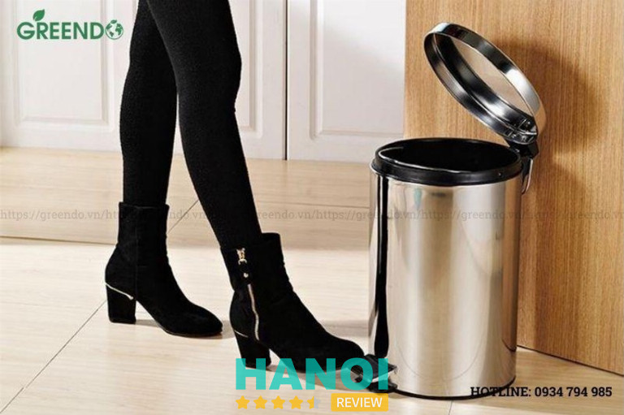
1.2.2. Thùng rác inox 20 lít
Thùng rác inox 20 lít là lựa chọn dung tích trung bình, cân bằng giữa khả năng chứa rác và tính thẩm mỹ. Sản phẩm đáp ứng tốt nhu cầu sinh hoạt hằng ngày của gia đình hoặc các văn phòng nhỏ, nơi cần sự gọn gàng nhưng vẫn đảm bảo tiện lợi khi sử dụng.
Ưu điểm: Dung tích vừa phải giúp hạn chế việc đổ rác quá thường xuyên. Thiết kế inox tạo cảm giác sang trọng, hiện đại, đồng thời đảm bảo độ bền cao và dễ vệ sinh trong quá trình sử dụng lâu dài.
Nhược điểm: So với thùng rác nhựa cùng dung tích, thùng rác inox 20 lít có chi phí đầu tư cao hơn, phù hợp với người dùng ưu tiên yếu tố thẩm mỹ và độ bền.
Vị trí đặt phù hợp: Thích hợp đặt tại phòng bếp, văn phòng làm việc hoặc khu vực sinh hoạt chung trong gia đình.
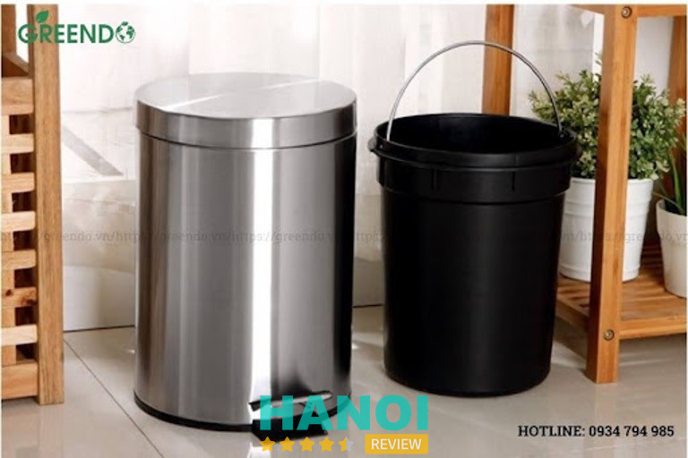
1.2.3. Thùng rác inox 30 lít
Thùng rác inox 30 lít là dòng dung tích lớn hơn trong nhóm thùng rác inox, phù hợp cho những không gian có lượng rác phát sinh nhiều nhưng vẫn yêu cầu cao về hình thức và sự sạch sẽ. Sản phẩm thường được sử dụng tại các không gian dịch vụ hoặc văn phòng quy mô vừa.
Ưu điểm: Dung tích lớn giúp giảm tần suất đổ rác trong ngày, thuận tiện cho khu vực có nhiều người sử dụng. Chất liệu inox bền bỉ, bề mặt sáng bóng giúp không gian luôn gọn gàng và chuyên nghiệp.
Nhược điểm: Kích thước lớn hơn so với các dòng inox dung tích nhỏ nên cần bố trí tại vị trí có diện tích phù hợp để không gây cản trở lối đi.
Vị trí đặt phù hợp: Phù hợp sử dụng tại nhà hàng, khách sạn, văn phòng quy mô vừa hoặc các khu vực dịch vụ cần sự chỉn chu.
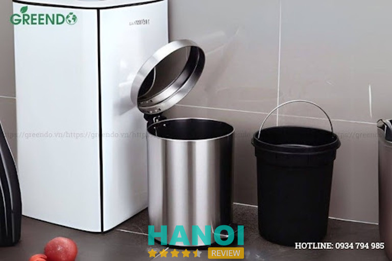
1.3. Thùng rác ngoài trời Hà Nội
Thùng rác ngoài trời là nhóm sản phẩm được thiết kế chuyên dụng để sử dụng tại các không gian công cộng, nơi thường xuyên chịu tác động của thời tiết và môi trường bên ngoài. Các mẫu thùng rác ngoài trời thường có kết cấu chắc chắn, vật liệu bền bỉ và khả năng chống gỉ, chống ăn mòn tốt, đồng thời đáp ứng yêu cầu về thẩm mỹ và phân loại rác tại khu vực công cộng.
1.3.1. Thùng rác inox 2 ngăn
Thùng rác inox 2 ngăn là dòng thùng rác ngoài trời được thiết kế nhằm hỗ trợ phân loại rác cơ bản, thường chia thành rác hữu cơ và rác vô cơ. Sản phẩm có hình thức gọn gàng, sử dụng chất liệu inox nên phù hợp với các không gian công cộng cần sự chỉn chu và sạch sẽ.
Ưu điểm: Thùng rác inox 2 ngăn giúp nâng cao ý thức phân loại rác ngay từ nguồn, góp phần bảo vệ môi trường. Chất liệu inox bền bỉ, dễ vệ sinh và có khả năng chống gỉ tốt khi đặt ngoài trời. Thiết kế hai ngăn riêng biệt giúp việc thu gom và xử lý rác thuận tiện hơn.
Nhược điểm: So với thùng rác một ngăn, sản phẩm có chi phí đầu tư cao hơn và cần có hướng dẫn phân loại rõ ràng để người sử dụng thao tác đúng.
Vị trí đặt phù hợp: Thích hợp đặt tại công viên, khuôn viên trường học, khu dân cư, lối đi công cộng hoặc khu vực sinh hoạt chung ngoài trời.
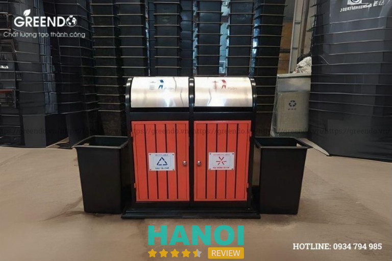
1.3.2. Thùng rác inox 3 ngăn
Thùng rác inox 3 ngăn là giải pháp phân loại rác nâng cao, thường được sử dụng trong các khu vực chú trọng đến xây dựng môi trường xanh và văn minh đô thị. Thiết kế ba ngăn giúp phân chia rác rõ ràng hơn, phục vụ tốt cho các chương trình phân loại rác tại nguồn.
Ưu điểm: Sản phẩm hỗ trợ phân loại rác hiệu quả, góp phần tối ưu công tác thu gom và xử lý rác thải. Kết cấu inox chắc chắn, độ bền cao và hình thức đồng bộ giúp không gian công cộng trở nên chuyên nghiệp và hiện đại hơn.
Nhược điểm: Kích thước thùng lớn hơn so với loại 2 ngăn, chiếm nhiều diện tích và chi phí đầu tư ban đầu cao hơn, phù hợp với các khu vực có không gian rộng.
Vị trí đặt phù hợp: Phù hợp sử dụng tại khu du lịch, khu đô thị mới, trung tâm thương mại, công viên lớn hoặc các khu vực công cộng có lưu lượng người qua lại cao.
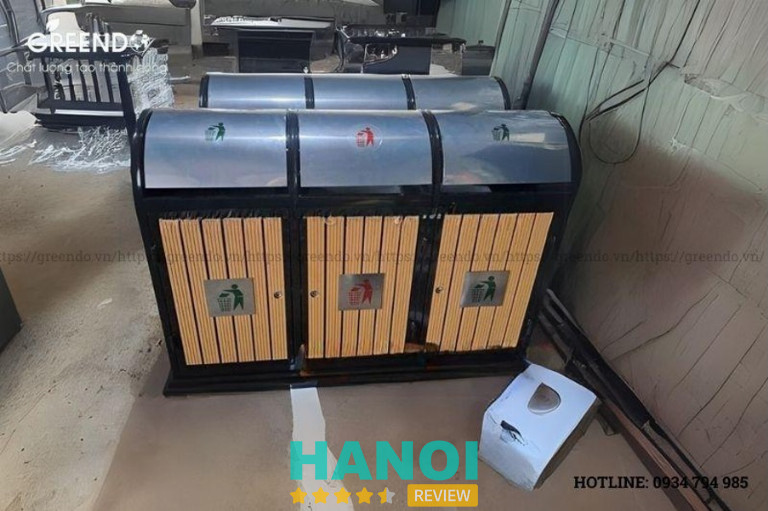
1.3.3. Thùng rác đôi ngoài trời có mái che
Thùng rác đôi ngoài trời có mái che là dòng thùng rác được thiết kế nhằm hạn chế tác động trực tiếp của mưa nắng lên rác thải bên trong. Phần mái che giúp giảm tình trạng nước mưa tràn vào thùng, hạn chế mùi và giữ khu vực xung quanh luôn sạch sẽ.
Ưu điểm: Thiết kế mái che giúp bảo vệ rác khỏi nước mưa, hạn chế phát sinh mùi và giữ vệ sinh khu vực đặt thùng. Kết cấu chắc chắn, phù hợp sử dụng lâu dài ngoài trời, đồng thời vẫn đáp ứng nhu cầu phân loại rác với thiết kế hai ngăn riêng biệt.
Nhược điểm: Kích thước lớn, chiếm diện tích và cần vị trí lắp đặt cố định để đảm bảo an toàn và thuận tiện khi sử dụng.
Vị trí đặt phù hợp: Thường được đặt tại vỉa hè, công viên, khuôn viên tòa nhà, khu dân cư, khu du lịch hoặc các khu vực công cộng ngoài trời.
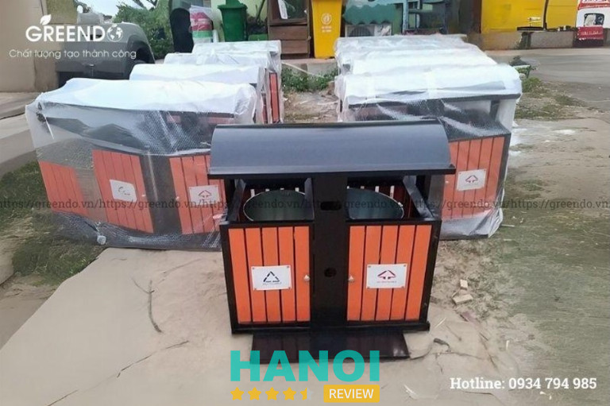
2. Cập nhật bảng giá thùng rác tại Hà Nội mới nhất hiện nay
Giá thùng rác tại Hà Nội hiện dao động từ khoảng 279.000 – 4.058.000 VND, tùy theo dung tích, chất liệu và loại thùng sử dụng trong nhà hay ngoài trời.
| Tên sản phẩm | Giá lẻ (VND) |
| Thùng rác nhựa 120L | 598.000 – 638.000 |
| Thùng rác nhựa 240L | 874.000 – 934.000 |
| Thùng rác nhựa 660L | 3.958.000 – 4.058.000 |
| Thùng rác inox 12L | 279.000 – 299.000 |
| Thùng rác inox 20L | 319.000 |
| Thùng rác inox 30L | 599.000 |
| Thùng rác inox 2 ngăn | 3.438.000 – 3.499.000 |
| Thùng rác inox 3 ngăn | 3.399.000 – 3.430.000 |
| Thùng rác đôi ngoài trời có mái che | 3.190.000 – 3.290.000 |
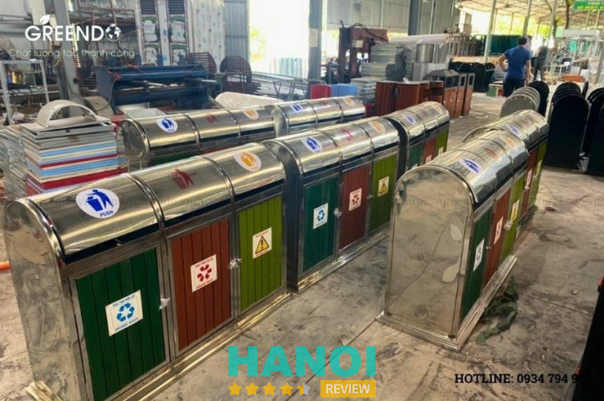
3. Cách chọn thùng rác phù hợp với nhu cầu sử dụng tại Hà Nội
Khi chọn thùng rác tại Hà Nội, cần ưu tiên sản phẩm phù hợp với điều kiện thời tiết, không gian sử dụng và mức độ tiện lợi khi thu gom rác.
Thùng rác nhựa HDPE hoặc Composite phù hợp cho khu vực ngoài trời nhờ khả năng chịu mưa nắng tốt; thùng rác inox thích hợp dùng trong nhà, nơi yêu cầu cao về vệ sinh và thẩm mỹ; thùng rác ngoài trời nên chọn loại có nắp hoặc mái che để hạn chế mùi và nước mưa.
Ngoài ra, nên ưu tiên thùng rác có nắp kín, bánh xe di chuyển và khả năng phân loại rác để thuận tiện sử dụng và góp phần bảo vệ môi trường đô thị.
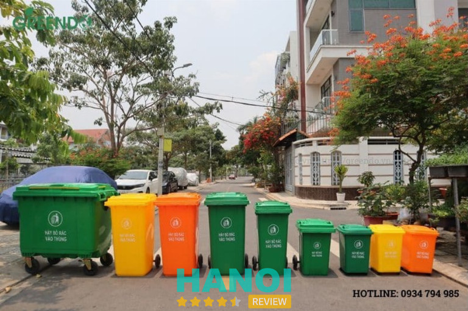
4. Địa chỉ cung cấp thùng rác Hà Nội chất lượng hiện nay
Tại Hà Nội, nhu cầu mua thùng rác phục vụ gia đình, doanh nghiệp và khu công cộng ngày càng tăng, đòi hỏi nhà cung cấp phải đảm bảo cả chất lượng sản phẩm lẫn dịch vụ hậu mãi. Greendo hiện là một trong những đơn vị cung cấp thùng rác uy tín, được nhiều khách hàng lựa chọn nhờ sản phẩm đa dạng, nguồn gốc rõ ràng và chính sách bán hàng minh bạch.
Điểm mạnh và chính sách tại Greendo:
- Cung cấp đầy đủ các dòng thùng rác nhựa, thùng rác inox, thùng rác ngoài trời với nhiều dung tích và mẫu mã
- Sản phẩm chất lượng cao, phù hợp sử dụng trong nhà, ngoài trời và khu vực công cộng
- Giá bán cạnh tranh, công khai, dễ so sánh theo từng loại thùng rác
- Tư vấn lựa chọn sản phẩm theo đúng nhu cầu thực tế, tránh lãng phí chi phí
- Hỗ trợ giao hàng nhanh tại Hà Nội, phù hợp cả đơn lẻ và đơn số lượng lớn
- Chính sách bảo hành, đổi trả rõ ràng, đảm bảo quyền lợi khách hàng
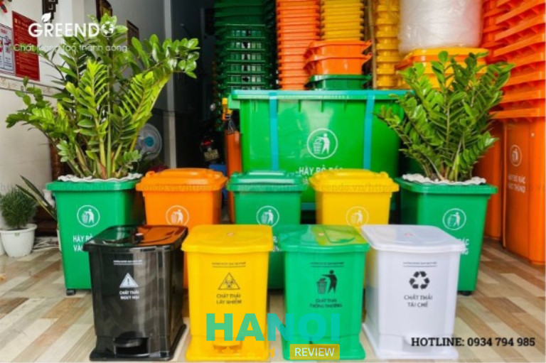
5. Các câu hỏi thường gặp khi mua thùng rác ở Hà Nội
Để giúp người mua dễ dàng lựa chọn và tìm được đơn vị cung cấp phù hợp, dưới đây là những câu hỏi thường gặp khi mua thùng rác ở Hà Nội, xoay quanh vấn đề sản phẩm, nhà cung cấp và giá cả.
5.1. Mua thùng rác công cộng cần lưu ý những gì?
Khi mua thùng rác công cộng tại Hà Nội, nên ưu tiên các mẫu có kết cấu chắc chắn, chịu được thời tiết mưa nắng và tần suất sử dụng cao. Ngoài ra, cần chọn dung tích phù hợp với lưu lượng người qua lại và cân nhắc các mẫu có nắp hoặc mái che để hạn chế mùi và nước mưa.
5.2. Mua thùng đựng rác ở đâu tại Hà Nội uy tín?
Người mua nên lựa chọn các đơn vị cung cấp thùng rác chuyên nghiệp, có địa chỉ rõ ràng, bảng giá minh bạch và đa dạng mẫu mã. Điều này giúp đảm bảo chất lượng sản phẩm cũng như thuận tiện trong bảo hành và hỗ trợ sau bán hàng.
5.3. Nhà cung cấp thùng rác cần đáp ứng những tiêu chí nào?
Một nhà cung cấp thùng rác uy tín cần có nguồn hàng ổn định, sản phẩm đạt tiêu chuẩn sử dụng lâu dài và chính sách bán hàng rõ ràng. Bên cạnh đó, khả năng tư vấn đúng nhu cầu và hỗ trợ giao hàng nhanh tại Hà Nội cũng là yếu tố quan trọng.
Việc lựa chọn thùng rác Hà Nội phù hợp giúp tối ưu chi phí và đảm bảo vệ sinh môi trường. Với đa dạng sản phẩm và chính sách rõ ràng, Greendo là đơn vị cung cấp thùng rác uy tín được nhiều khách hàng tin tưởng hiện nay.
Liên hệ với GREENDO qua thông tin sau:
- Website: greendo.vn/
- Hotline: 0934 794 985
- Địa chỉ: K76/1 Phan Bôi, Phường An Hải, TP Đà Nẵng
- Email: thietbigreendo@gmail.com
- Fanpage: FB.com/thietbigreendo/
- Youtube: youtube.com/@thietbi-greendo
- Pinterest: pinterest.com/thietbigreendo/
- Instagram: instagram.com/thietbigreendo/
Tin đọc nhiều


Trở thành người đầu tiên bình luận cho bài viết này!